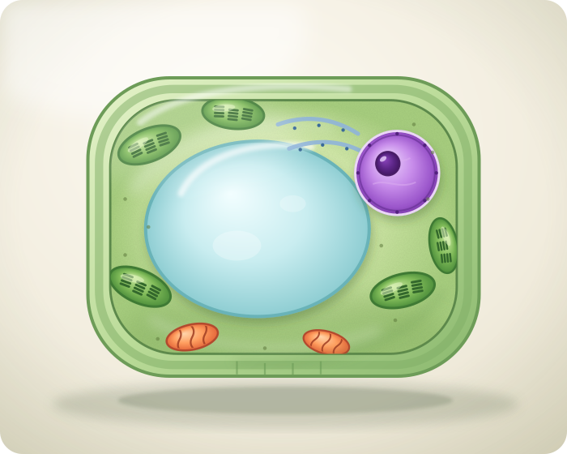
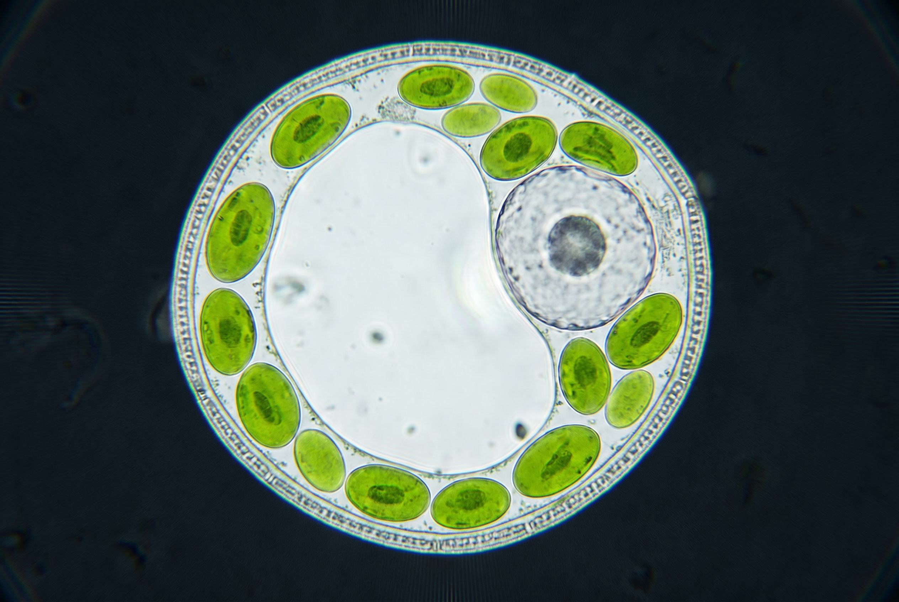

Modelo tridimensional
Una arquitectura firme y fotosintética
La pared de celulosa aporta sostén. La membrana regula el intercambio y los cloroplastos captan energía luminosa.
Las células vegetales son eucariotas: su ADN está dentro del núcleo y poseen organelas especializadas. La vacuola central almacena agua y contribuye a la turgencia, que mantiene firmes hojas y tallos.
Los cloroplastos contienen clorofila y realizan la fotosíntesis. No todas las células de una planta tienen cloroplastos: por ejemplo, muchas células de la raíz no reciben luz.
Pared celularCelulosa; sostén y protección.
CloroplastosFotosíntesis y producción de glucosa.
VacuolaAgua, solutos y presión interna.
NúcleoADN dentro de una envoltura nuclear.

Arrastrá para explorar · rotación automática
Vista didáctica, no a escala

Idea clave
La forma acompaña la función
Una célula vegetal de la hoja se organiza para captar luz y realizar intercambio gaseoso. La misma planta puede tener células con formas y organelas diferentes según el tejido que integren.
LuzLos cloroplastos transforman energía luminosa.
AguaLa vacuola ayuda a sostener la presión interna.
SosténLa pared celular mantiene la forma.